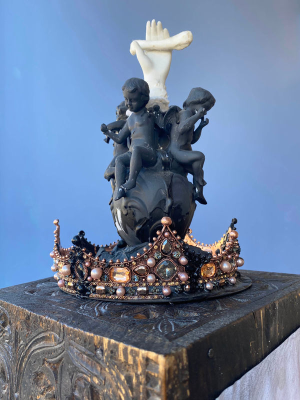

~MOM~
work, love, and care in a strange world
August 11 - September 10
closing September 10, 4-7 PM
with transonic invocation by gal*in_dog aka guillermo galindo and performances by Stacey Goodman and Mary Armentrout
For most of my life, my mom worked hard and long hours in front of an adding machine at a desk about 3 blocks from Dream Farm Commons. She was contained by patriarchy and economics and was kind, dignified, and quiet, bravely facing many things alone. While she continually worked to contain me, she also celebrated my uncontainment and, I believe, wished for a world of more interconnection, safety and adventure.
In the early morning of June 27, my mom died. This body of work is made in honor of and in conversation with my mama; my bereavement is confluent with our collective experiences of loss and grief, for which time is not so often afforded, and with our inter-related bursting needs of care and community in an increasingly strange world.
I believe my mother has a message for us to stay steady with the work and to love and care for each other now, more than ever. We have some messages too about poetics, surfing precarity, travel to other realms, protest and activism and the sacred engagement of making art.
This space of this installation is both domestic and an odd work world, a transposition many women float between; it is also an art work space which is also often an odd biosphere. The installation began with my painting on the wall and oversized spoon, a telephone and my mother's adding machine, two chairs made by Kico le Strange, a mystical cloud formation by Glenna Cole Allee, and a sculpture by Stacey Goodman.
